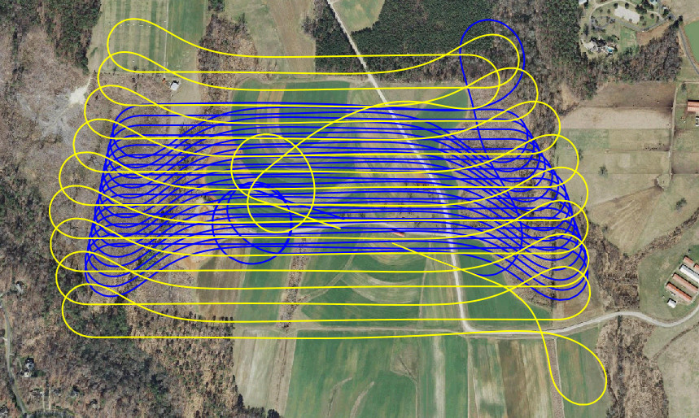
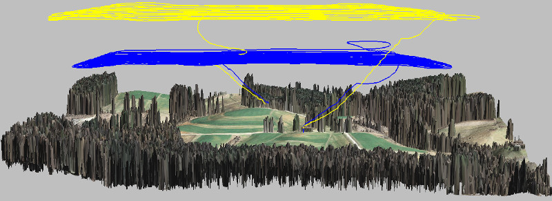

Terrain Analysis of the flight site using GIS tools
GIS595-004/603; MEA592-006/601:
UAS Mapping for 3D Modeling
Task
Flight planning software packages often use low resolution
DEMs without trees or buildings.
By bringing flight path into GIS and using latest high resolution DSMs
we can make sure flight path will not cross any obstacles.
Analyze and visualize:
- flight path altitude
- flight path height above terrain
- check for any obstacles
Flight altitude

Height above terrain

Flights with different GSD and overlap
Yellow flight has GSD 4 cm, blue flight has GSD 2.4 cm

